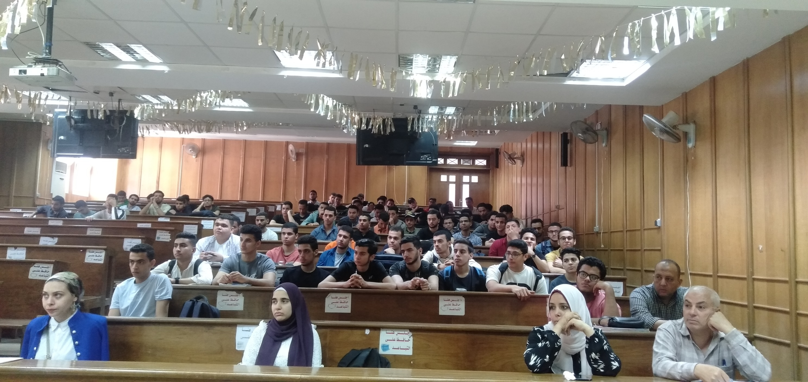
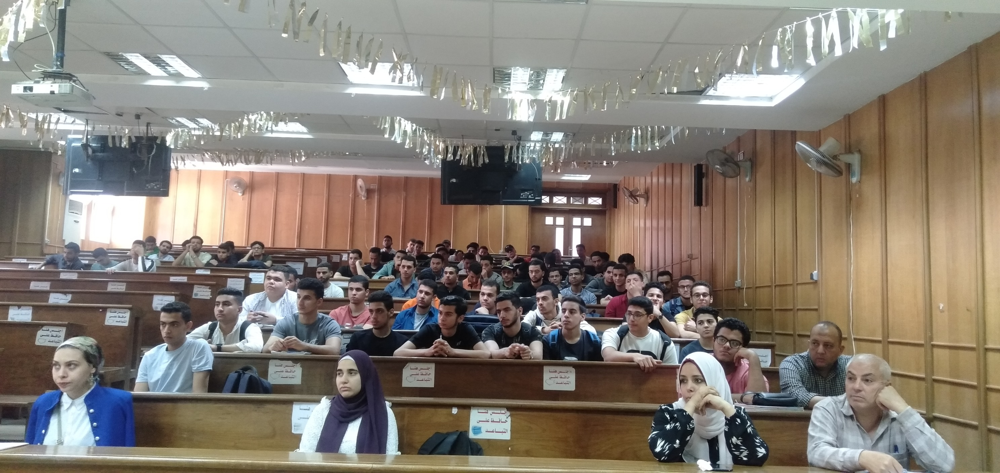

تقبل الكلية الطلاب الحاصلين على شهادة الثانوية العامة شعبة الرياضيات او ما يعادلها وفقا لشروط قواعد القبول التى يحددها مكتب التنسيق كل عام وفقا لقرارات المجلس الاعلى للجامعات
تعقد امتحانات النقل وامتحانات البكالوريوس فى نهاية كل فصل دراسي فى المقررات التي درسها الطالب فى فرقته و يكون مدة الامتحان التحريري ثلاث ساعات و يعتبر الطالب راسبا فى مادة التى لم يؤد الامتحان التحريرى لها و كذلك يعتبر راسبا فى المشروع اذا لم يحضر المناقشة .
- ممتـــــــــاز من 85 % فأكثـــــــر من مجموع الدرجات
- جيد جدا من 75 % إلى أقل من 85% من مجموع الدرجات
- جيـــــــــد من 65 % إلى أقل من 75% من مجموع الدرجات
- مقبــــــــول من 50 % إلى أقل من 65 % من مجموع الدرجات
- ضعيــــــــــف من 30 % إلى أقل من 50% من مجموع الدرجات
- ضعيف جدا أقل من 30 % من مجموع الدرجات
يجوز لمجلس الكلية أن يوقف قيد الطالب لمدة سنتين دراسيتين خلال سنـوات الدراسة فى الكلية إذا تقدم بعذر مقبول يمنعه من الانتظام فى الدراسة ، وفى حالة الضرورة يجوز لمجلس الجامعة زيادة مدة وقف القيد على أن يكون إيقاف القيد لعام دراسى كامل ويقدم الطالب المستندات قبل بدء الدراسة أو بعدها مباشرة .
1. التجنيد لتأدية الخدمة العسكرية
2. المرض الطويل
3. مرافقة الزوج بالخارج
4. الاعارة للعمل بالخارج
5. السجن او التحفظ او الاعتقال
6. تأخير قبول او وصول ملفات الطلاب
يقوم طلاب الفرقة الرابعة بإعداد مشروع البكالوريوس وتحدد مجالس الأقسام المختصة موضوعة وتخصص له فترة إضافية بعد الامتحان التحريري يحددها مجلس الكلية بناء على اقتراح مجالس الأقسام المختصة .
الطلاب المقيدون والمرخص لهم بتأدية الامتحانات من الخارج يخضعون للنظام التأديبي التالى :
(1) الأعمال المخلة بنظام الكلية أو المنشآت الجامعية .
(2) تعطيل الدراسة أو التحريض عليه أو الامتناع المدبر عن حضور الدروس والمحاضرات والأعمال الجامعية الأخرى التي تقضى اللوائح بالمواظبة عليها .
(3) كل فعل يتنافى مع الشرف والكرامة أو مخل بحسن السير والسلوك داخل الجامعة أو خارجها .
(4) كل إخلال بنظام الامتحان أو الهدوء اللازم له وكل غش فى امتحان أو شروع فيه .
(5) كل إتلاف للمنشآت والأجهزة أو المواد أو الكتب الجامعية أو تبديدها .
(6) كل تنظيم للجماعات داخل الجامعة أو الاشتراك فيها بدون ترخيص سابق من السلطات الجامعية المختصة .
(7) توزيع النشرات أو إصدار جرائد حائط بأية صورة بالكليات أو جمع توقيعات بدون ترخيص سابق من السلطات الجامعية المختصة .
(8) الاعتصام داخل المباني الجامعية أو الاشتراك فى مظاهرات مخالفة للنظام العام أو الآداب .
(1) التنبيه شفهياً أو كتابة .
(2) الإنذار .
(3) الحرمان من بعض الخدمات الطلابية .
(4) الحرمان من حضور دروس أحد المقررات لمدة لا تتجاوز شهراً .
(5) الفصل من الكلية لمدة لا تتجاوز شهراً .
(6) الحرمان من الامتحان فى مقرر أو أكثر .
(7) وقف قيد الطالب لدرجة الماجستير أو الدكتوراه لمدة لا تتجاوز شهرين أو لمدة فصل دراسي .
(8) إلغاء امتحان الطالب فى مقرر أو أكثر .
(9) الفصل من الكلية لمدة لا تتجاوز فصلا دراسياً .
(10) الحرمان من الامتحان فى فصل دراسي واحد أو أكثر .
(10) الحرمان من الامتحان فى فصل دراسي واحد أو أكثر .
(11) حرمان الطالب من القيد للماجستير أو الدكتوراه لمدة فصل دراسي أو أكثر.
(12) الفصل من الكلية لمدة لا تزيد على فصل دراسي .
(13) الفصل النهائي من الجامعة ويَبلغ قرار الفصل إلى الجامعات الأخرى .
ويترتب عليه عدم صلاحية الطالب للقيد أو التقدم إلى الامتحان فى جامعات جمهورية مصر العربية .
ويجوز الأمر بإعلان القرار بالعقوبة التأديبية داخل الكلية، ويجب إبلاغ القرار إلى ولى أمر الطالب ، وتحفظ القرارات الصادرة بالعقوبات التأديبية عدا التنبيه الشفوي فى ملف الطالب . ولمجلس الجامعة أن يعيد النظر فى القرار الصادر بالفصل النهائي بعد مضى ثلاث سنوات على الأقل من تاريخ صدور القرار .